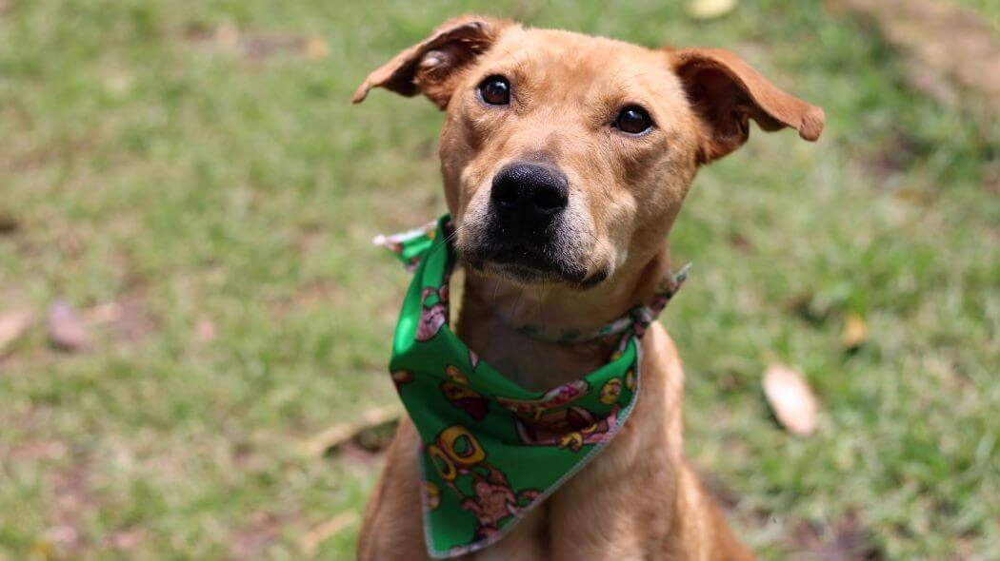

Anastasia
es jóven (1 año), hermosa, mediana ( un poco más pequeña que un labrador) y es lo más dulce que hay, muy apegada a las personas y sociable con otros perros, además le gustan los niños.Es tranquila puede vivir en casa o en depto y es una completa regalona, le encantan los besos y abrazos.Al principio es tímida, luego se enamora.